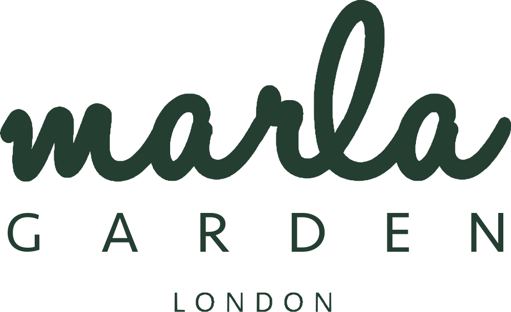

Classical Garden Pavilions
Classical Garden PavilionsCream Arched Garden Pavilion
Design collection
A pale ornamental garden pavilion with repeated arched glazing sits within mature planting. The entrance and roof details create a clear front elevation.
Explore the design
Classical Garden Pavilions · Design visualisation
Green glazing bars, a raised roofline and ornamental details establish a recognisable garden pavilion form. The frame reads differently against summer planting, masonry and open sky.
Discuss this design direction ↗The architectural character
The references include different green tones and entrance arrangements within the classical pavilion family. Colour is a design direction here; the final finish, material and glazing specification are confirmed for the particular project.
Green glazing bars, a hipped glazed roof and ridge cresting give this pavilion a recognisable Victorian form. A glazed canopy shelters the double doors at the front.
Green is the traditional colour for garden ironwork: it sits back into summer planting and lets the glazing pattern stand out.
A planted garden, a lawn edge or a walled garden suits a green pavilion. The references show it against masonry, borders and open sky.
Our design-stage drawing gives about 4.2 × 3.0 m and 12.6 m². See our glass garden pavilions, the drawing in our design studio, or the Green Gable Conservatory project.
Develop your project
Explore glass garden pavilions in london to consider the design, intended use and scope together.
Compare an open-sided gazebo before deciding on the level of enclosure.
Our design process begins with the setting, intended use and practical requirements.
Share the setting and your preferred direction to discuss your garden project.
Continue exploring
Classical Garden PavilionsDesign collection
A pale ornamental garden pavilion with repeated arched glazing sits within mature planting. The entrance and roof details create a clear front elevation.
Explore the design Classical Garden Pavilions
Classical Garden PavilionsDesign collection
A pale garden salon has a pronounced entrance and a glazed roof, with warm interior light and a paved approach. Decorative framing gives the small structure an architectural presence.
Explore the design Classical Garden Pavilions
Classical Garden PavilionsDesign collection
Pale frames and repeated arched glazing give these pitched-roof pavilions a classical garden character. Steps and a defined entrance create a clear approach through the planting.
Explore the designYour next space
Share the setting, the way you want to use the space and the designs you are drawn to.
Plan your project